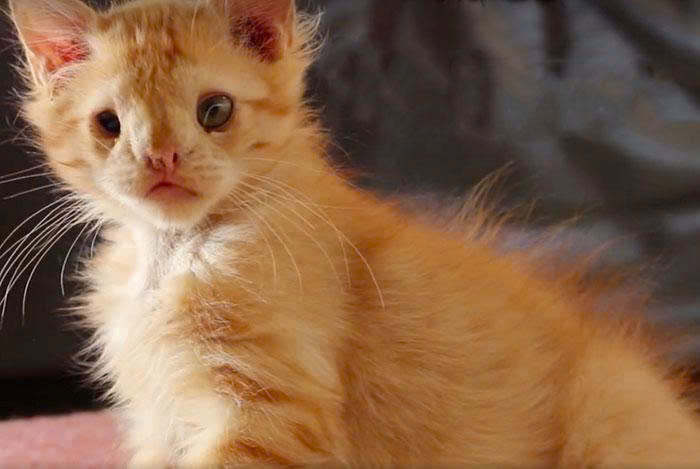
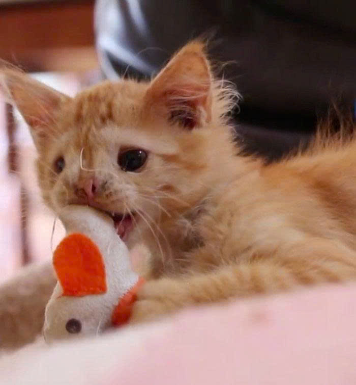
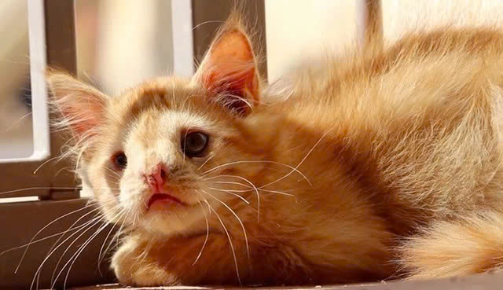

Câu chuyện cảm động về nghị lực của chú mèo bị xa lánh vì quá xấu xí
Romeo dị dạng bẩm sinh một bên mắt và bị mẹ nó bỏ rơi từ khi mới sinh.
Romeo là chú mèo đực đẻ hoang từ khi sinh ra đã mắc một biến dạng mà làm cho cậu ta có ngoại hình khác thường so với những con mèo khác.
Đó là lý do tại sao cậu không bao giờ nhận được tình yêu, sự dịu dàng và được sở hữu bởi ai. Romeo còn bị gọi với cái tên "siêu xấu xí" và dường như không ai muốn nhận nuôi cậu ấy.
Cho đến một ngày, chú mèo đã được cứu trợ bởi các nghiên cứu sinh vật tại tổ chức vì động vật Santuario Compasión ở Tây Ban Nha vì họ nhận ra được vẻ đẹp bên trong của chú mèo. Từ đó, chú mèo này đã thay đổi rất nhiều, cuộc đời của chú như mở sang một trang mới. Chú mèo đáng yêu này đã có cơ hội để yêu thương và được yêu thương!

Dù vậy, Romeo rất hoạt bát và luôn mong được nhiều người chú ý, quan tâm đến nó.
Nhân viên gắn bó với Romeo nhất là cô Laura Llacer, cô từng tâm sự trên trang cá nhân của trung tâm rằng: "Romeo rất hiếu động và thích gây sự chú ý của mọi người tại trung tâm. Tuy nhiên, tiếc là không có một ai chịu nhận nuôi nó vì chê vẻ ngoài xấu xí của nó."

Ngay sau khi dòng trạng thái đó được đăng tải, cư dân mạng nhanh chóng lan truyền nó, kèm theo đó, hàng loạt yêu cầu nhận nuôi Romeo ồ ạt được gửi tới. Điều này khiến các nhân viên, đặc biệt là Laura rất hạnh phúc. Cô chia sẻ: "Hy vọng câu chuyện nhỏ của Romeo sẽ giúp chúng ta xua tan định kiến về ngoại hình của động vật, đồng thời dạy cho chúng ta biết rằng, vẻ đẹp không chỉ nằm ở những đường nét hoàn hảo. Dũng cảm sống tốt với những gì mình có – đó mới là điều làm nên ánh sáng. Và đôi khi, mọi phép màu bắt đầu từ một cái vuốt ve thật khẽ."

Vẻ đáng yêu, vui tươi của Romeo làm trái tim nhiều người tan chảy
Giờ đây, Romeo đang sống một cuộc đời hoàn toàn khác so với những ngày đầu đầy khó khăn và bất hạnh. Chú mèo nhỏ bé năm nào giờ đã có một mái ấm thực sự, nơi có những con người yêu thương, quan tâm và chăm sóc Romeo bằng tất cả sự dịu dàng và kiên nhẫn. Mỗi ngày trôi qua với Romeo đều là những khoảnh khắc bình yên và hạnh phúc, từ những giấc ngủ dài dưới ánh nắng buổi sáng, những bữa ăn đầy đủ cho đến những cái vuốt ve ân cần mà chú từng không dám mơ tới.
Người chủ của Romeo không chỉ cho chú một ngôi nhà, mà còn cho chú một gia đình đúng nghĩa.
Hành trình của Romeo không chỉ là câu chuyện về sự hồi phục của một chú mèo, mà còn là câu chuyện về hy vọng, lòng nhân ái và sức mạnh của tình yêu thương. Romeo xứng đáng được tận hưởng những điều tốt đẹp nhất mà một con mèo có thể có, và giờ đây, chú đang sống trọn vẹn từng ngày trong hạnh phúc – đúng như những gì chú xứng đáng được nhận sau tất cả những gì đã trải qua.